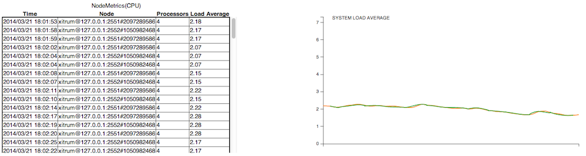

Xitrum Guide¶

There are also Japanese, Korean, Russian, and Vietnamese versions.
Introduction¶
+--------------------+
| Clients |
+--------------------+
|
+--------------------+
| Netty |
+--------------------+
| Xitrum |
| +----------------+ |
| | HTTP(S) Server | |
| |----------------| |
| | Web framework | | <- Akka, Hazelcast -> Other instances
| +----------------+ |
+--------------------+
| Your app |
+--------------------+
Xitrum is an async and clustered Scala web framework and HTTP(S) server fusion on top of Netty and Akka.
From a user:
Wow, this is a really impressive body of work, arguably the most complete Scala framework outside of Lift (but much easier to use).
Xitrum is truly a full stack web framework, all the bases are covered, including wtf-am-I-on-the-moon extras like ETags, static file cache identifiers & auto-gzip compression. Tack on built-in JSON converter, before/around/after interceptors, request/session/cookie/flash scopes, integrated validation (server & client-side, nice), built-in cache layer (Hazelcast), i18n a la GNU gettext, Netty (with Nginx, hello blazing fast), etc. and you have, wow.
Features¶
Typesafe, in the spirit of Scala. All the APIs try to be as typesafe as possible.
Async, in the spirit of Netty. Your request proccessing action does not have to respond immediately. Long polling, chunked response (streaming), WebSocket, and SockJS are supported.
Fast built-in HTTP and HTTPS web server based on Netty (HTTPS can use Java engine or native OpenSSL engine). Xitrum’s static file serving speed is similar to that of Nginx.
Extensive client-side and server-side caching for faster responding. At the web server layer, small files are cached in memory, big files are sent using NIO’s zero copy. At the web framework layer you have can declare page, action, and object cache in the Rails style. All Google’s best practices like conditional GET are applied for client-side caching. You can also force browsers to always send request to server to revalidate cache before using.
Range requests support for static files. Serving movie files for smartphones requires this feature. You can pause/resume file download.
CORS support.
Routes are automatically collected in the spirit of JAX-RS and Rails Engines. You don’t have to declare all routes in a single place. Think of this feature as distributed routes. You can plug an app into another app. If you have a blog engine, you can package it as a JAR file, then you can put that JAR file into another app and that app automatically has blog feature! Routing is also two-way: you can recreate URLs (reverse routing) in a typesafe way. You can document routes using Swagger Doc.
Classes and routes are automatically reloaded in development mode.
Views can be written in a separate Scalate template file or Scala inline XML. Both are typesafe.
Sessions can be stored in cookies (more scalable) or clustered Hazelcast (more secure). Hazelcast also gives in-process (thus faster and simpler to use) distribued cache, you don’t need separate cache servers. The same is for pubsub feature in Akka.
jQuery Validation is integrated for browser side and server side validation.
i18n using GNU gettext. Translation text extraction is done automatically. You don’t have to manually mess with properties files. You can use powerful tools like Poedit for translating and merging translations. gettext is unlike most other solutions, both singular and plural forms are supported.
Xitrum tries to fill the spectrum between Scalatra and Lift: more powerful than Scalatra and easier to use than Lift. You can easily create both RESTful APIs and postbacks. Xitrum is controller-first like Scalatra, not view-first like Lift. Most people are familliar with controller-first style.
See related projects for a list of demos, plugins etc.
Contributors¶
Xitrum is open source, please join its Google group.
Contributors are listed in the order of their first contribution.
(*): Currently active core members.
Tutorial¶
This chapter shortly describes how to create and run a Xitrum project. It assumes that you are using Linux and you have installed Java 8.
Create a new empty Xitrum project¶
To create a new empty project, download xitrum-new.zip:
wget -O xitrum-new.zip https://github.com/xitrum-framework/xitrum-new/archive/master.zip
Or:
curl -L -o xitrum-new.zip https://github.com/xitrum-framework/xitrum-new/archive/master.zip
Run¶
The de facto stardard way of building Scala projects is using
SBT. The newly created project
has already included SBT 0.13 in sbt directory. If you want to install
SBT yourself, see its setup guide.
Change to the newly created project directory and run sbt/sbt fgRun:
unzip xitrum-new.zip
cd xitrum-new
sbt/sbt fgRun
This command will download all dependencies, compile the project,
and run the class quickstart.Boot, which starts the web server. In the console,
you will see all the routes:
[INFO] Load routes.cache or recollect routes...
[INFO] Normal routes:
GET / quickstart.action.SiteIndex
[INFO] SockJS routes:
xitrum/metrics/channel xitrum.metrics.XitrumMetricsChannel websocket: true, cookie_needed: false
[INFO] Error routes:
404 quickstart.action.NotFoundError
500 quickstart.action.ServerError
[INFO] Xitrum routes:
GET /webjars/swagger-ui/2.0.17/index xitrum.routing.SwaggerUiVersioned
GET /xitrum/xitrum.js xitrum.js
GET /xitrum/metrics/channel xitrum.sockjs.Greeting
GET /xitrum/metrics/channel/:serverId/:sessionId/eventsource xitrum.sockjs.EventSourceReceive
GET /xitrum/metrics/channel/:serverId/:sessionId/htmlfile xitrum.sockjs.HtmlFileReceive
GET /xitrum/metrics/channel/:serverId/:sessionId/jsonp xitrum.sockjs.JsonPPollingReceive
POST /xitrum/metrics/channel/:serverId/:sessionId/jsonp_send xitrum.sockjs.JsonPPollingSend
WEBSOCKET /xitrum/metrics/channel/:serverId/:sessionId/websocket xitrum.sockjs.WebSocket
POST /xitrum/metrics/channel/:serverId/:sessionId/xhr xitrum.sockjs.XhrPollingReceive
POST /xitrum/metrics/channel/:serverId/:sessionId/xhr_send xitrum.sockjs.XhrSend
POST /xitrum/metrics/channel/:serverId/:sessionId/xhr_streaming xitrum.sockjs.XhrStreamingReceive
GET /xitrum/metrics/channel/info xitrum.sockjs.InfoGET
WEBSOCKET /xitrum/metrics/channel/websocket xitrum.sockjs.RawWebSocket
GET /xitrum/metrics/viewer xitrum.metrics.XitrumMetricsViewer
GET /xitrum/metrics/channel/:iframe xitrum.sockjs.Iframe
GET /xitrum/metrics/channel/:serverId/:sessionId/websocket xitrum.sockjs.WebSocketGET
POST /xitrum/metrics/channel/:serverId/:sessionId/websocket xitrum.sockjs.WebSocketPOST
[INFO] HTTP server started on port 8000
[INFO] HTTPS server started on port 4430
[INFO] Xitrum started in development mode
On startup, all routes will be collected and output to log. It is very convenient for you to have a list of routes if you want to write documentation for 3rd parties about the RESTful APIs in your web application.
Open http://localhost:8000/ or https://localhost:4430/ in your browser. In the console you will see request information:
[INFO] GET quickstart.action.SiteIndex, 1 [ms]
Import the project to Eclipse¶
You can use Eclipse to write Scala code.
From the project directory, run:
sbt/sbt eclipse
.project file for Eclipse will be generated from definitions in build.sbt.
Now open Eclipse, and import the project.
Import the project to IntelliJ¶
You can also use IntelliJ.
With its Scala plugin installed, simply open your SBT project, you don’t need to generate project files as with Eclipse.
Autoreload¶
You can autoreload .class files (hot swap) without having to restart your program. However, to avoid performance and stability problems, you should only autoreload .class files while developing (development mode).
Run with IDEs¶
While developing, when you run project in advanced IDEs like Eclipse or IntelliJ, by default the IDEs will automatically reload code for you.
Run with SBT¶
When you run with SBT, you need to open 2 console windows:
One to run
sbt/sbt fgRun. This will run the program and reload .class files when they are changed.One to run
sbt/sbt ~compile. Whenever you edit source code files, this will compile the source code to .class files.
In the sbt directory, there’s agent7.jar.
It’s in charge of reloading .class files in the current working directory (and its subdirectories).
If you see the sbt/sbt script, you’ll see the option like -javaagent:agent7.jar.
DCEVM¶
Normal JVM only allows only changing method bodies. You may use DCEVM, which is an open source modification of the Java HotSpot VM that allows unlimited redefinition of loaded classes.
You can install DCEVM in 2 ways:
If you choose to patch:
You can enable DCEVM permanently.
Or set it as an “alternative” JVM. In this case, to enable DCEVM, every time you run
javacommand, you need to specify-XXaltjvm=dcevmoption. For example, you need to add-XXaltjvm=dcevmoption to thesbt/sbtscript.
If you use IDEs like Eclipse or IntelliJ, you need to configure them to use DCEVM (not the default JVM) to run your project.
If you use SBT, you need to configure the PATH environment variable so that
the java command is from DCEVM (not from the default JVM). You still need
the javaagent above, because although DCEVM supports advanced class changes,
it itself doesn’t reload classes.
See DCEVM - A JRebel free alternative for more info.
Action and view¶
To be flexible, Xitrum provides 3 kinds of actions:
normal Action, FutureAction, and ActorAction.
Normal action¶
import xitrum.Action
import xitrum.annotation.GET
@GET("hello")
class HelloAction extends Action {
def execute() {
respondText("Hello")
}
}
Because the action will run on directly Netty’s IO thread, it should not do blocking processing that may take a long time, otherwise Netty can’t accept new connections or send response back to clients.
FutureAction¶
import xitrum.FutureAction
import xitrum.annotation.GET
@GET("hello")
class HelloAction extends FutureAction {
def execute() {
respondText("hi")
}
}
The action will run on the same thread pool for ActorAction (see below),
separated from the thread pool of Netty.
Actor action¶
If you want your action to be an Akka actor, extend ActorAction:
import scala.concurrent.duration._
import xitrum.ActorAction
import xitrum.annotation.GET
@GET("actor")
class HelloAction extends ActorAction {
def execute() {
// See Akka doc about scheduler
import context.dispatcher
context.system.scheduler.scheduleOnce(3 seconds, self, System.currentTimeMillis())
// See Akka doc about "become"
context.become {
case pastTime =>
respondInlineView(s"It's $pastTime Unix ms 3s ago.")
}
}
}
An actor instance will be created when there’s request. It will be stopped when the
connection is closed or when the response has been sent by respondText,
respondView etc. methods. For chunked response, it is not stopped right away.
It is stopped when the last chunk is sent.
The actor will run on the thread pool of the Akka actor system named “xitrum”.
Respond to client¶
From an action, to respond something to client, use:
respondView: responds view template file, with or without layoutrespondInlineView: responds embedded template (not separate template file), with or without layoutrespondText("hello"): responds a string without layoutrespondHtml("<html>...</html>"): same as above, with content type set to “text/html”respondJson(List(1, 2, 3)): converts Scala object to JSON object then respondsrespondJs("myFunction([1, 2, 3])")respondJsonP(List(1, 2, 3), "myFunction"): combination of the above tworespondJsonText("[1, 2, 3]")respondJsonPText("[1, 2, 3]", "myFunction")respondBinary: responds an array of bytesrespondFile: sends a file directly from disk, very fast because zero-copy (aka send-file) is usedrespondEventSource("data", "event")
Respond template view file¶
Each action may have an associated Scalate template view file. Instead of responding directly in the action with the above methods, you can use a separate view file.
scr/main/scala/mypackage/MyAction.scala:
package mypackage
import xitrum.Action
import xitrum.annotation.GET
@GET("myAction")
class MyAction extends Action {
def execute() {
respondView()
}
def hello(what: String) = "Hello %s".format(what)
}
scr/main/scalate/mypackage/MyAction.jade:
- import mypackage.MyAction
!!! 5
html
head
!= antiCsrfMeta
!= xitrumCss
!= jsDefaults
title Welcome to Xitrum
body
a(href={url}) Path to the current action
p= currentAction.asInstanceOf[MyAction].hello("World")
!= jsForView
xitrumCssincludes the default CSS for Xitrum. You may remove it if you don’t like.xitrum-frameworkjsDefaultsincludes jQuery, jQuery Validate plugin etc. should be put at layout’s <head>.jsForViewcontains JS fragments added byjsAddToView, should be put at layout’s bottom.
In templates you can use all methods of the class xitrum.Action.
Also, you can use utility methods provided by Scalate like unescape.
See the Scalate doc.
The default Scalate template type is Jade. You can also use Mustache, Scaml, or Ssp. To config the default template type, see xitrum.conf file in the config directory of your Xitrum application.
You can override the default template type by passing “jade”, “mustache”, “scaml”, or “ssp” to respondView.
val options = Map("type" ->"mustache")
respondView(options)
Type casting currentAction¶
If you want to have exactly instance of the current action, cast currentAction to
the action you wish.
p= currentAction.asInstanceOf[MyAction].hello("World")
If you have multiple lines like above, you can cast only one time:
- val myAction = currentAction.asInstanceOf[MyAction]; import myAction._
p= hello("World")
p= hello("Scala")
p= hello("Xitrum")
Mustache¶
Must read:
You can’t do some things with Mustache like with Jade, because Mustache syntax is stricter.
To pass things from action to Mustache template, you must use at:
Action:
at("name") = "Jack"
at("xitrumCss") = xitrumCss
Mustache template:
My name is {{name}}
{{xitrumCss}}
Note that you can’t use the below keys for at map to pass things to Scalate
template, because they’re already used:
“context”: for Sclate utility object, which contains methods like
unescape“helper”: for the current action object
CoffeeScript¶
You can embed CoffeeScript in Scalate template using :coffeescript filter:
body
:coffeescript
alert "Hello, Coffee!"
Output:
<body>
<script type='text/javascript'>
//<![CDATA[
(function() {
alert("Hello, Coffee!");
}).call(this);
//]]>
</script>
</body>
But note that it is slow:
jade+javascript+1thread: 1-2ms for page
jade+coffesscript+1thread: 40-70ms for page
jade+javascript+100threads: ~40ms for page
jade+coffesscript+100threads: 400-700ms for page
You pre-generate CoffeeScript to JavaScript if you need speed.
Layout¶
When you respond a view with respondView or respondInlineView, Xitrum
renders it to a String, and sets the String to renderedView variable. Xitrum
then calls layout method of the current action, finally Xitrum responds
the result of this method to the browser.
By default layout method just returns renderedView itself. If you want
to decorate your view with something, override this method. If you include
renderedView in the method, the view will be included as part of your layout.
The point is layout is called after your action’s view, and whatever returned
is what responded to the browser. This mechanism is simple and straight forward.
No magic. For convenience, you may think that there’s no layout in Xitrum at all.
There’s just the layout method and you do whatever you want with it.
Typically, you create a parent class which has a common layout for many views:
src/main/scala/mypackage/AppAction.scala
package mypackage
import xitrum.Action
trait AppAction extends Action {
override def layout = renderViewNoLayout[AppAction]()
}
src/main/scalate/mypackage/AppAction.jade
!!! 5
html
head
!= antiCsrfMeta
!= xitrumCss
!= jsDefaults
title Welcome to Xitrum
body
!= renderedView
!= jsForView
src/main/scala/mypackage/MyAction.scala
package mypackage
import xitrum.annotation.GET
@GET("myAction")
class MyAction extends AppAction {
def execute() {
respondView()
}
def hello(what: String) = "Hello %s".format(what)
}
scr/main/scalate/mypackage/MyAction.jade:
- import mypackage.MyAction
a(href={url}) Path to the current action
p= currentAction.asInstanceOf[MyAction].hello("World")
Layout without separate file¶
AppAction.scala
import xitrum.Action
import xitrum.view.DocType
trait AppAction extends Action {
override def layout = DocType.html5(
<html>
<head>
{antiCsrfMeta}
{xitrumCss}
{jsDefaults}
<title>Welcome to Xitrum</title>
</head>
<body>
{renderedView}
{jsForView}
</body>
</html>
)
}
Pass layout directly to respondView¶
val specialLayout = () =>
DocType.html5(
<html>
<head>
{antiCsrfMeta}
{xitrumCss}
{jsDefaults}
<title>Welcome to Xitrum</title>
</head>
<body>
{renderedView}
{jsForView}
</body>
</html>
)
respondView(specialLayout _)
Inline view¶
Normally, you write view in a Scalate file. You can also write it directly:
import xitrum.Action
import xitrum.annotation.GET
@GET("myAction")
class MyAction extends Action {
def execute() {
val s = "World" // Will be automatically HTML-escaped
respondInlineView(
<p>Hello <em>{s}</em>!</p>
)
}
}
Render fragment¶
Suppose MyAction.jade is at: scr/main/scalate/mypackage/MyAction.jade
If you want to render the fragment file in the same directory: scr/main/scalate/mypackage/_MyFragment.jade
renderFragment[MyAction]("MyFragment")
If MyAction is the current action, you can skip it:
renderFragment("MyFragment")
Respond view of other action¶
Use the syntax respondView[ClassName]():
package mypackage
import xitrum.Action
import xitrum.annotation.{GET, POST}
@GET("login")
class LoginFormAction extends Action {
def execute() {
// Respond scr/main/scalate/mypackage/LoginFormAction.jade
respondView()
}
}
@POST("login")
class DoLoginAction extends Action {
def execute() {
val authenticated = ...
if (authenticated)
redirectTo[HomeAction]()
else
// Reuse the view of LoginFormAction
respondView[LoginFormAction]()
}
}
One action - multiple views¶
If you want to have multiple views for one:
package mypackage
import xitrum.Action
import xitrum.annotation.GET
// These are non-routed actions, for mapping to view template files:
// scr/main/scalate/mypackage/HomeAction_NormalUser.jade
// scr/main/scalate/mypackage/HomeAction_Moderator.jade
// scr/main/scalate/mypackage/HomeAction_Admin.jade
trait HomeAction_NormalUser extends Action
trait HomeAction_Moderator extends Action
trait HomeAction_Admin extends Action
@GET("")
class HomeAction extends Action {
def execute() {
val userType = ...
userType match {
case NormalUser => respondView[HomeAction_NormalUser]()
case Moderator => respondView[HomeAction_Moderator]()
case Admin => respondView[HomeAction_Admin]()
}
}
}
Using addional non-routed actions like above seems to be tedious, but this way your program will be typesafe.
You can also use String to specify template location:
respondView("mypackage/HomeAction_NormalUser")
respondView("mypackage/HomeAction_Moderator")
respondView("mypackage/HomeAction_Admin")
Component¶
You can create reusable view components that can be embedded to multiple views. In concept, a component is similar to an action:
But it does not have routes, thus
executemethod is not needed.It does not “responds” a full response, it just “renders” a view fragment. So inside a component, instead of calling
respondXXX, please callrenderXXX.Just like an action, a component can have none, one, or multiple associated view templates.
package mypackage
import xitrum.{FutureAction, Component}
import xitrum.annotation.GET
class CompoWithView extends Component {
def render() = {
// Render associated view template, e.g. CompoWithView.jade
// Note that this is renderView, not respondView!
renderView()
}
}
class CompoWithoutView extends Component {
def render() = {
"Hello World"
}
}
@GET("foo/bar")
class MyAction extends FutureAction {
def execute() {
respondView()
}
}
MyAction.jade:
- import mypackage._
!= newComponent[CompoWithView]().render()
!= newComponent[CompoWithoutView]().render()
RESTful APIs¶
You can write RESTful APIs for iPhone, Android applications etc. very easily.
import xitrum.Action
import xitrum.annotation.GET
@GET("articles")
class ArticlesIndex extends Action {
def execute() {...}
}
@GET("articles/:id")
class ArticlesShow extends Action {
def execute() {...}
}
The same for POST, PUT, PATCH, DELETE, and OPTIONS. Xitrum automatically handles HEAD as GET with empty response body.
For HTTP clients that do not support PUT and DELETE (like normal browsers), to
simulate PUT and DELETE, send a POST with _method=put or _method=delete in the
request body.
On web application startup, Xitrum will scan all those annotations, build the routing table and print it out for you so that you know what APIs your application has, like this:
[INFO] Routes:
GET /articles quickstart.action.ArticlesIndex
GET /articles/:id quickstart.action.ArticlesShow
Routes are automatically collected in the spirit of JAX-RS and Rails Engines. You don’t have to declare all routes in a single place. Think of this feature as distributed routes. You can plug an app into another app. If you have a blog engine, you can package it as a JAR file, then you can put that JAR file into another app and that app automatically has blog feature! Routing is also two-way: you can recreate URLs (reverse routing) in a typesafe way. You can document routes using Swagger Doc.
Route cache¶
For better startup speed, routes are cached to file routes.cache.
While developing, routes in .class files in the target directory are not
cached. If you change library dependencies that contain routes, you may need to
delete routes.cache. This file should not be committed to your project
source code repository.
Route order with first and last¶
When you want to route like this:
/articles/:id --> ArticlesShow
/articles/new --> ArticlesNew
You must make sure the second route be checked first. First is for this purpose:
import xitrum.annotation.{GET, First}
@GET("articles/:id")
class ArticlesShow extends Action {
def execute() {...}
}
@First // This route has higher priority than "ArticlesShow" above
@GET("articles/new")
class ArticlesNew extends Action {
def execute() {...}
}
Last is similar.
Multiple paths for one action¶
@GET("image", "image/:format")
class Image extends Action {
def execute() {
val format = paramo("format").getOrElse("png")
// ...
}
}
Dot in route¶
@GET("articles/:id", "articles/:id.:format")
class ArticlesShow extends Action {
def execute() {
val id = param[Int]("id")
val format = paramo("format").getOrElse("html")
// ...
}
}
Catch the rest of path¶
/ character is special thus not allowed in param names. If you want to allow
it, the param must be the last and you must write like this:
GET("service/:id/proxy/:*")
The path below will match:
/service/123/proxy/http://foo.com/bar
To extract the :* part:
val url = param("*") // Will be "http://foo.com/bar"
Link to an action¶
Xitrum tries to be typesafe. Don’t write URL manually. Do like this:
<a href={url[ArticlesShow]("id" -> myArticle.id)}>{myArticle.title}</a>
Redirect to another action¶
Read to know what redirection is.
import xitrum.Action
import xitrum.annotation.{GET, POST}
@GET("login")
class LoginInput extends Action {
def execute() {...}
}
@POST("login")
class DoLogin extends Action {
def execute() {
...
// After login success
redirectTo[AdminIndex]()
}
}
GET("admin")
class AdminIndex extends Action {
def execute() {
...
// Check if the user has not logged in, redirect him to the login page
redirectTo[LoginInput]()
}
}
You can also redirect to the current action with redirecToThis().
Forward to another action¶
Use forwardTo[AnotherAction](). While redirectTo above causes the browser to
make another request, forwardTo does not.
Determine is the request is Ajax request¶
Use isAjax.
// In an action
val msg = "A message"
if (isAjax)
jsRender("alert(" + jsEscape(msg) + ")")
else
respondText(msg)
Anti-CSRF¶
For non-GET requests, Xitrum protects your web application from Cross-site request forgery by default.
When you include antiCsrfMeta in your layout:
import xitrum.Action
import xitrum.view.DocType
trait AppAction extends Action {
override def layout = DocType.html5(
<html>
<head>
{antiCsrfMeta}
{xitrumCss}
{jsDefaults}
<title>Welcome to Xitrum</title>
</head>
<body>
{renderedView}
{jsForView}
</body>
</html>
)
}
The <head> part will include something like this:
<!DOCTYPE html>
<html>
<head>
...
<meta name="csrf-token" content="5402330e-9916-40d8-a3f4-16b271d583be" />
...
</head>
...
</html>
The token will be automatically included in all non-GET Ajax requests as
X-CSRF-Token header sent by jQuery if you include
xitrum.js
in your view template. xitrum.js is included in jsDefaults. If you don’t
use jsDefaults, you can include xitrum.js in your template like this:
<script type="text/javascript" src={url[xitrum.js]}></script>
antiCsrfInput and antiCsrfToken¶
Xitrum takes CSRF token from X-CSRF-Token request header. If the header does
not exists, Xitrum takes the token from csrf-token request body param
(note: not param in the URL).
If you manually write forms, and you don’t use the meta tag and xitrum.js as
described in the previous section, you need to use antiCsrfInput or
antiCsrfToken:
form(method="post" action={url[AdminAddGroup]})
!= antiCsrfInput
form(method="post" action={url[AdminAddGroup]})
input(type="hidden" name="csrf-token" value={antiCsrfToken})
SkipCsrfCheck¶
When you create APIs for machines, e.g. smartphones, you may want to skip this automatic CSRF check. Add the trait xitrum.SkipCsrfCheck to you action:
import xitrum.{Action, SkipCsrfCheck}
import xitrum.annotation.POST
trait Api extends Action with SkipCsrfCheck
@POST("api/positions")
class LogPositionAPI extends Api {
def execute() {...}
}
@POST("api/todos")
class CreateTodoAPI extends Api {
def execute() {...}
}
Manipulate collected routes¶
Xitrum automatically collect routes on startup. If you want to manipulate the routes, you can use xitrum.Config.routes.
Example:
import xitrum.{Config, Server}
object Boot {
def main(args: Array[String]) {
// You can modify routes before starting the server
val routes = Config.routes
// Remove routes to an action by its class
routes.removeByClass[MyClass]()
if (demoVersion) {
// Remove routes to actions by a prefix
routes.removeByPrefix("premium/features")
// This also works
routes.removeByPrefix("/premium/features")
}
...
Server.start()
}
}
Getting entire request content¶
Usually, when the request content type is not application/x-www-form-urlencoded,
you may need to get the entire request content (and parse it manually etc.).
To get it as a string:
val body = requestContentString
To get it as JSON:
val myJValue = requestContentJValue // => JSON4S (http://json4s.org) JValue
val myMap = xitrum.util.SeriDeseri.fromJValue[Map[String, Int]](myJValue)
If you want to full control, use request.getContent. It returns a ByteBuf.
Documenting API with Swagger¶
You can document your API with Swagger
out of the box. Add @Swagger annotation on actions that need to be documented.
Xitrum will generate /xitrum/swagger.json.
This file can be used with Swagger UI
to generate interactive API documentation.
Xitrum includes Swagger UI. Access it at the path /xitrum/swagger-ui of your program,
e.g. http://localhost:8000/xitrum/swagger-ui.

Let’s see an example:
import xitrum.{Action, SkipCsrfCheck}
import xitrum.annotation.{GET, Swagger}
@Swagger(
Swagger.Tags("APIs to create images"),
Swagger.Description("Dimensions should not be bigger than 2000 x 2000"),
Swagger.OptStringQuery("text", "Text to render on the image, default: Placeholder"),
Swagger.Produces("image/png"),
Swagger.Response(200, "PNG image"),
Swagger.Response(400, "Width or height is invalid or too big")
)
trait ImageApi extends Action with SkipCsrfCheck {
lazy val text = paramo("text").getOrElse("Placeholder")
}
@GET("image/:width/:height")
@Swagger( // <-- Inherits other info from ImageApi
Swagger.Summary("Generate rectangle image"),
Swagger.IntPath("width"),
Swagger.IntPath("height")
)
class RectImageApi extends Api {
def execute {
val width = param[Int]("width")
val height = param[Int]("height")
// ...
}
}
@GET("image/:width")
@Swagger( // <-- Inherits other info from ImageApi
Swagger.Summary("Generate square image"),
Swagger.IntPath("width")
)
class SquareImageApi extends Api {
def execute {
val width = param[Int]("width")
// ...
}
}
JSON for Swagger
will be generated when you access /xitrum/swagger.
Swagger UI uses the JSON above to generate interactive API doc.
Params other than Swagger.IntPath and Swagger.OptStringQuery above: BytePath, IntQuery, OptStringForm etc. They are in the form:
<Value type><Param type>(required parameter)Opt<Value type><Param type>(optional parameter)
Value type: Byte, Int, Int32, Int64, Long, Number, Float, Double, String, Boolean, Date, DateTime
Param type: Path, Query, Body, Header, Form
Read more about value type and param type.
Template engines¶
The configured template engine will be called when renderView, renderFragment, or respondView is called.
Config template engine¶
In config/xitrum.conf, template engine can be configured in one of the following 2 forms, depending on the engine you use:
template = my.template.EngineClassName
Or:
template {
"my.template.EngineClassName" {
option1 = value1
option2 = value2
}
}
The default template engine is xitrum-scalate.
Remove template engine¶
If you create only RESTful APIs in your project, normally you don’t call
renderView, renderFragment, or respondView. In this case, you can even remove
template engine from your project to make it lighter. Just remove or comment out
the templateEngine in config/xitrum.conf.
Then remove template related configs from your project.
Create your own template engine¶
To create your own template engine, create a class that implements xitrum.view.TemplateEngine. Then set your class in config/xitrum.conf.
For an example, see xitrum-scalate.
Postbacks¶
There are 2 main use cases of web applications:
To serve machines: you need to create RESTful APIs for smartphones, web services for other web sites.
To serve human users: you need to create interactive web pages.
As a web framework, Xitrum aims to support you to solve these use cases easily. To solve the 1st use case, you use RESTful actions. To solve the 2nd use case, you can use the Ajax form postback feature in Xitrum. Please see the following links for the idea about postback:
Xitrum’s postback feature is inspired by Nitrogen.
Layout¶
AppAction.scala
import xitrum.Action
import xitrum.view.DocType
trait AppAction extends Action {
override def layout = DocType.html5(
<html>
<head>
{antiCsrfMeta}
{xitrumCss}
{jsDefaults}
<title>Welcome to Xitrum</title>
</head>
<body>
{renderedView}
{jsForView}
</body>
</html>
)
}
Form¶
Articles.scala
import xitrum.annotation.{GET, POST, First}
import xitrum.validator._
@GET("articles/:id")
class ArticlesShow extends AppAction {
def execute() {
val id = param("id")
val article = Article.find(id)
respondInlineView(
<h1>{article.title}</h1>
<div>{article.body}</div>
)
}
}
@First // Force this route to be matched before "show"
@GET("articles/new")
class ArticlesNew extends AppAction {
def execute() {
respondInlineView(
<form data-postback="submit" action={url[ArticlesCreate]}>
<label>Title</label>
<input type="text" name="title" class="required" /><br />
<label>Body</label>
<textarea name="body" class="required"></textarea><br />
<input type="submit" value="Save" />
</form>
)
}
}
@POST("articles")
class ArticlesCreate extends AppAction {
def execute() {
val title = param("title")
val body = param("body")
val article = Article.save(title, body)
flash("Article has been saved.")
jsRedirectTo(show, "id" -> article.id)
}
}
When submit JavaScript event of the form is triggered, the form will be posted back
to ArticlesCreate.
action attribute of <form> is encrypted. The encrypted URL acts as the anti-CSRF token.
Non-form¶
Postback can be set on any element, not only form.
An example with link:
<a href="#" data-postback="click" action={postbackUrl[LogoutAction]}>Logout</a>
Clicking the link above will trigger the postback to LogoutAction.
Confirmation dialog¶
If you want to display a confirmation dialog:
<a href="#" data-postback="click"
action={url[LogoutAction]}
data-confirm="Do you want to logout?">Logout</a>
If the user clicks “Cancel”, the postback will not be sent.
Extra params¶
In case of form element, you can add <input type="hidden"... to send
extra params with the postback.
For other elements, you do like this:
<a href="#"
data-postback="click"
action={url[ArticlesDestroy]("id" -> item.id)}
data-params="_method=delete"
data-confirm={"Do you want to delete %s?".format(item.name)}>Delete</a>
You may also put extra params in a separate form:
<form id="myform" data-postback="submit" action={url[SiteSearch]}>
Search:
<input type="text" name="keyword" />
<a class="pagination"
href="#"
data-postback="click"
data-form="#myform"
action={url[SiteSearch]("page" -> page)}>{page}</a>
</form>
#myform is the jQuery selector to select the form that contains extra params.
Customize animation image while Ajax is loading¶
By default, this animated GIF image is displayed while Ajax is loading:

To customize, please call this JS snippet after including jsDefaults (which includes
xitrum.js)
in your view template:
// target: The element that triggered the postback
xitrum.ajaxLoading = function(target) {
// Called when the animation should be displayed when the Ajax postback is being sent.
var show = function() {
...
};
// Called when the animation should be stopped after the Ajax postback completes.
var hide = function() {
...
};
return {show: show, hide: hide};
};
XML¶
Scala allow writing literal XML. Xitrum uses this feature as its “template engine”:
Scala checks XML syntax at compile time: Views are typesafe.
Scala automatically escapes XML: Views are XSS-free by default.
Below are some tips.
Unescape XML¶
Use scala.xml.Unparsed:
import scala.xml.Unparsed
<script>
{Unparsed("if (1 < 2) alert('Xitrum rocks');")}
</script>
Or use <xml:unparsed>:
<script>
<xml:unparsed>
if (1 < 2) alert('Xitrum rocks');
</xml:unparsed>
</script>
<xml:unparsed> will be hidden in the output:
<script>
if (1 < 2) alert('Xitrum rocks');
</script>
Group XML elements¶
<div id="header">
{if (loggedIn)
<xml:group>
<b>{username}</b>
<a href={url[LogoutAction]}>Logout</a>
</xml:group>
else
<xml:group>
<a href={url[LoginAction]}>Login</a>
<a href={url[RegisterAction]}>Register</a>
</xml:group>}
</div>
<xml:group> will be hidden in the output, for example when the use has logged in:
<div id="header">
<b>My username</b>
<a href="/login">Logout</a>
</div>
Render XHTML¶
Xitrum renders views and layouts as XHTML automatically. If you want to render it yourself (rarely), pay attention to the code below.
import scala.xml.Xhtml
val br = <br />
br.toString // => <br></br>, some browsers will render this as 2 <br />s
Xhtml.toXhtml(<br />) // => "<br />"
JavaScript and JSON¶
JavaScript¶
Xitrum includes jQuery. There are some jsXXX helpers.
Add JavaScript fragments to view¶
In your action, call jsAddToView (multiple times if you need):
class MyAction extends AppAction {
def execute() {
...
jsAddToView("alert('Hello')")
...
jsAddToView("alert('Hello again')")
...
respondInlineView(<p>My view</p>)
}
}
In your layout, call jsForView:
import xitrum.Action
import xitrum.view.DocType
trait AppAction extends Action {
override def layout = DocType.html5(
<html>
<head>
{antiCsrfMeta}
{xitrumCss}
{jsDefaults}
</head>
<body>
<div id="flash">{jsFlash}</div>
{renderedView}
{jsForView}
</body>
</html>
)
Respond JavaScript directly without view¶
To respond JavaScript:
jsRespond("$('#error').html(%s)".format(jsEscape(<p class="error">Could not login.</p>)))
To redirect:
jsRedirectTo("http://cntt.tv/")
jsRedirectTo[LoginAction]()
JSON¶
Xitrum includes JSON4S. Please read about it to know how to parse and generate JSON.
To convert between Scala case object and JSON string:
import xitrum.util.SeriDeseri
case class Person(name: String, age: Int, phone: Option[String])
val person1 = Person("Jack", 20, None)
val json = SeriDeseri.toJson(person1)
val person2 = SeriDeseri.fromJson[Person](json)
To respond JSON:
val scalaData = List(1, 2, 3) // An example
respondJson(scalaData)
JSON is also neat for config files that need nested structures. See Load config files.
Plugin for Knockout.js¶
Async response¶
List of normal responding methods:
respondView: responds view template file, with or without layoutrespondInlineView: responds embedded template (not separate template file), with or without layoutrespondText("hello"): responds a string without layoutrespondHtml("<html>...</html>"): same as above, with content type set to “text/html”respondJson(List(1, 2, 3)): converts Scala object to JSON object then respondsrespondJs("myFunction([1, 2, 3])")respondJsonP(List(1, 2, 3), "myFunction"): combination of the above tworespondJsonText("[1, 2, 3]")respondJsonPText("[1, 2, 3]", "myFunction")respondBinary: responds an array of bytesrespondFile: sends a file directly from disk, very fast because zero-copy (aka send-file) is usedrespondEventSource("data", "event")
Xitrum does not automatically send any default response.
You must explicitly call respondXXX methods above to send response.
If you don’t call respondXXX, Xitrum will keep the HTTP connection for you,
and you can call respondXXX later.
To check if the connection is still open, call channel.isOpen.
You can also use addConnectionClosedListener:
addConnectionClosedListener {
// The connection has been closed
// Unsubscribe from events, release resources etc.
}
Because of the async nature, the response is not sent right away.
respondXXX returns
ChannelFuture.
You can use it to perform actions when the response has actually been sent.
For example, if you want to close the connection after the response has been sent:
import io.netty.channel.{ChannelFuture, ChannelFutureListener}
val future = respondText("Hello")
future.addListener(new ChannelFutureListener {
def operationComplete(future: ChannelFuture) {
future.getChannel.close()
}
})
Or shorter:
respondText("Hello").addListener(ChannelFutureListener.CLOSE)
WebSocket¶
import scala.runtime.ScalaRunTime
import xitrum.annotation.WEBSOCKET
import xitrum.{WebSocketAction, WebSocketBinary, WebSocketText, WebSocketPing, WebSocketPong}
@WEBSOCKET("echo")
class EchoWebSocketActor extends WebSocketAction {
def execute() {
// Here you can extract session data, request headers etc.
// but do not use respondText, respondView etc.
// To respond, use respondWebSocketXXX like below.
log.debug("onOpen")
context.become {
case WebSocketText(text) =>
log.info("onTextMessage: " + text)
respondWebSocketText(text.toUpperCase)
case WebSocketBinary(bytes) =>
log.info("onBinaryMessage: " + ScalaRunTime.stringOf(bytes))
respondWebSocketBinary(bytes)
case WebSocketPing =>
log.debug("onPing")
case WebSocketPong =>
log.debug("onPong")
}
}
override def postStop() {
log.debug("onClose")
super.postStop()
}
}
An actor will be created when there’s request. It will be stopped when:
The connection is closed
WebSocket close frame is received or sent
Use these to send WebSocket frames:
respondWebSocketTextrespondWebSocketBinaryrespondWebSocketPingrespondWebSocketClose
There’s no respondWebSocketPong, because Xitrum will automatically send pong frame for you when it receives ping frame.
To get URL to the above WebSocket action:
// Probably you want to use this in Scalate view etc.
val url = absWebSocketUrl[EchoWebSocketActor]
SockJS¶
SockJS is a browser JavaScript library that provides a WebSocket-like object, for browsers that don’t support WebSocket. SockJS tries to use WebSocket first. If that fails it can use a variety of ways but still presents them through the WebSocket-like object.
If you want to work with WebSocket API on all kind of browsers, you should use SockJS and avoid using WebSocket directly.
<script>
var sock = new SockJS('http://mydomain.com/path_prefix');
sock.onopen = function() {
console.log('open');
};
sock.onmessage = function(e) {
console.log('message', e.data);
};
sock.onclose = function() {
console.log('close');
};
</script>
Xitrum includes the JavaScript file of SockJS. In your view template, just write like this:
...
html
head
!= jsDefaults
...
SockJS does require a server counterpart. Xitrum automatically does it for you.
import xitrum.{Action, SockJsAction, SockJsText}
import xitrum.annotation.SOCKJS
@SOCKJS("echo")
class EchoSockJsActor extends SockJsAction {
def execute() {
// To respond, use respondSockJsXXX like below
log.info("onOpen")
context.become {
case SockJsText(text) =>
log.info("onMessage: " + text)
respondSockJsText(text)
}
}
override def postStop() {
log.info("onClose")
super.postStop()
}
}
An actor will be created when there’s a new SockJS session. It will be stopped when the SockJS session is closed.
Use these to send SockJS frames:
respondSockJsTextrespondSockJsClose
See Various issues and design considerations:
Basically cookies are not suited for SockJS model. If you want to authorize a
session, provide a unique token on a page, send it as a first thing over SockJS
connection and validate it on the server side. In essence, this is how cookies
work.
To config SockJS clustering, see Clustering with Akka.
Chunked response¶
To send chunked response:
Call
setChunkedCall
respondXXXas many times as you wantLastly, call
respondLastChunk
Chunked response has many use cases. For example, when you need to generate a very large CSV file that does may not fit memory, you can generate chunk by chunk and send them while you generate:
// "Cache-Control" header will be automatically set to:
// "no-store, no-cache, must-revalidate, max-age=0"
//
// Note that "Pragma: no-cache" is linked to requests, not responses:
// http://palizine.plynt.com/issues/2008Jul/cache-control-attributes/
setChunked()
val generator = new MyCsvGenerator
generator.onFirstLine { line =>
val future = respondText(header, "text/csv")
future.addListener(new ChannelFutureListener {
def operationComplete(future: ChannelFuture) {
if (future.isSuccess) generator.next()
}
}
}
generator.onNextLine { line =>
val future = respondText(line)
future.addListener(new ChannelFutureListener {
def operationComplete(future: ChannelFuture) {
if (future.isSuccess) generator.next()
}
})
}
generator.onLastLine { line =>
val future = respondText(line)
future.addListener(new ChannelFutureListener {
def operationComplete(future: ChannelFuture) {
if (future.isSuccess) respondLastChunk()
}
})
}
generator.generate()
Notes:
Headers are sent on the first
respondXXXcall.You can send optional trailing headers at
respondLastChunkPage and action cache cannot be used with chunked response.
Using chunked response together with ActorAction, you can easily implement
Facebook BigPipe.
Forever iframe¶
Chunked response can be used for Comet.
The page that embeds the iframe:
...
<script>
var functionForForeverIframeSnippetsToCall = function() {...}
</script>
...
<iframe width="1" height="1" src="path/to/forever/iframe"></iframe>
...
The action that responds <script> snippets forever:
// Prepare forever iframe
setChunked()
// Need something like "123" for Firefox to work
respondText("<html><body>123", "text/html")
// Most clients (even curl!) do not execute <script> snippets right away,
// we need to send about 2KB dummy data to bypass this problem
for (i <- 1 to 100) respondText("<script></script>\n")
Later, whenever you want to pass data to the browser, just send a snippet:
if (channel.isOpen)
respondText("<script>parent.functionForForeverIframeSnippetsToCall()</script>\n")
else
// The connection has been closed, unsubscribe from events etc.
// You can also use ``addConnectionClosedListener``.
Event Source¶
See http://dev.w3.org/html5/eventsource/
Event Source response is a special kind of chunked response. Data must be UTF-8.
To respond event source, call respondEventSource as many time as you want.
respondEventSource("data1", "event1") // Event name is "event1"
respondEventSource("data2") // Event name is set to "message" by default
Static files¶
Serve static files on disk¶
Project directory layout:
config
public
favicon.ico
robots.txt
404.html
500.html
img
myimage.png
css
mystyle.css
js
myscript.js
src
build.sbt
Xitrum automatically serves static files inside public directory.
URLs to them are in the form:
/img/myimage.png
/css/mystyle.css
/css/mystyle.min.css
To refer to them:
<img src={publicUrl("img/myimage.png")} />
To serve normal file in development environment and its minimized version in production environment (mystyle.css and mystyle.min.css as above):
<img src={publicUrl("css", "mystyle.css", "mystyle.min.css")} />
To send a static file on disk from your action, use respondFile.
respondFile("/absolute/path")
respondFile("path/relative/to/the/current/working/directory")
To optimize static file serving speed, you can avoid unnecessary file existence check with regex filter. If request url does not match pathRegex, Xitrum will respond 404 for that request.
See pathRegex in config/xitrum.conf.
index.html fallback¶
If there’s no route (no action) for URL /foo/bar (or /foo/bar/),
Xitrum will try to look for static file public/foo/bar/index.html
(in the “public” directory). If the file exists, Xitrum will respond it
to the client.
404 and 500¶
404.html and 500.html in public directory are used when there’s no matching
route and there’s error processing request, respectively. If you want to use
your own error handler:
import xitrum.Action
import xitrum.annotation.{Error404, Error500}
@Error404
class My404ErrorHandlerAction extends Action {
def execute() {
if (isAjax)
jsRespond("alert(" + jsEscape("Not Found") + ")")
else
renderInlineView("Not Found")
}
}
@Error500
class My500ErrorHandlerAction extends Action {
def execute() {
if (isAjax)
jsRespond("alert(" + jsEscape("Internal Server Error") + ")")
else
renderInlineView("Internal Server Error")
}
}
Response status is set to 404 or 500 before the actions are executed, so you don’t have to set yourself.
Serve resource files in classpath with WebJars convention¶
WebJars¶
WebJars provides a lot of web libraries that you can declare as a dependency in your project.
For example, if you want to use Underscore.js,
declare in your project’s build.sbt like this:
libraryDependencies += "org.webjars" % "underscorejs" % "1.6.0-3"
Then in your .jade template file:
script(src={webJarsUrl("underscorejs/1.6.0", "underscore.js", "underscore-min.js")})
Xitrum will automatically use underscore.js for development environment and
underscore-min.js for production environment.
The result will look like this:
/webjars/underscorejs/1.6.0/underscore.js?XOKgP8_KIpqz9yUqZ1aVzw
If you want to use the same file for both environments:
script(src={webJarsUrl("underscorejs/1.6.0/underscore.js")})
Dependencies of a dependency are automatically downloaded. If you see that the
version you want is not selected (you can confirm by running sbt xitrumPackage
and see files in the created directory target/xitrum/lib), you can force it with
dependencyOverrides. For example, if you see that jQuery 2.x is selected,
but you want to support Internet Explorer 6, 7, or 8, you need to force jQuery 1.x
like this:
dependencyOverrides += "org.webjars" % "jquery" % "1.11.3"
Save resource file inside .jar file with WebJars convention¶
If you are a library developer and want to serve myimage.png from your library, which is a .jar file in classpath, save myimage.png in your .jar file with WebJars convention, example:
META-INF/resources/webjars/mylib/1.0/myimage.png
To serve it:
<img src={webJarsUrl("mylib/1.0/myimage.png")} />
In both development and production environments, the URL will be:
/webjars/mylib/1.0/myimage.png?xyz123
Respond a file in classpath¶
To respond a file inside an classpath element (a .jar file or a directory), even when the file is not saved with WebJars convention:
respondResource("path/relative/to/the/classpath/element")
Ex:
respondResource("akka/actor/Actor.class")
respondResource("META-INF/resources/webjars/underscorejs/1.6.0/underscore.js")
respondResource("META-INF/resources/webjars/underscorejs/1.6.0/underscore-min.js")
Client side cache with ETag and max-age¶
Xitrum automatically adds Etag for static files on disk and in classpath.
ETags for small files are MD5 of file content. They are cached for later use.
Keys of cache entries are (file path, modified time). Because modified time
on different servers may differ, each web server in a cluster has its own local
ETag cache.
For big files, only modified time is used as ETag. This is not perfect because not identical file on different servers may have different ETag, but it is still better than no ETag at all.
publicUrl and webJarsUrl automatically add ETag to the URLs they
generate. For example:
webJarsUrl("jquery/2.1.1/jquery.min.js")
=> /webjars/jquery/2.1.1/jquery.min.js?0CHJg71ucpG0OlzB-y6-mQ
Xitrum also sets max-age and Expires headers to
one year.
Don’t worry that browsers do not pickup a latest file when you change it.
Because when a file on disk changes, its modified time changes, thus the URLs
generated by publicUrl and webJarsUrl also change. Its ETag cache
is also updated because the cache key changes.
GZIP¶
Xitrum automatically gzips textual responses. It checks the Content-Type
header to determine if a response is textual: text/html, xml/application etc.
Xitrum always gzips static textual files, but for dynamic textual responses, for overall performance reason it does not gzips response smaller than 1 KB.
Server side cache¶
To avoid loading files from disk, Xitrum caches small static files
(not only textual) in memory with LRU (Least Recently Used) expiration.
See small_static_file_size_in_kb and max_cached_small_static_files
in config/xitrum.conf.
Serve flash socket policy file¶
Read about flash socket policy:
http://www.adobe.com/devnet/flashplayer/articles/socket_policy_files.html
http://www.lightsphere.com/dev/articles/flash_socket_policy.html
The protocol to serve flash socket policy file is different from HTTP. To serve:
Modify config/flash_socket_policy.xml appropriately
Modify config/xitrum.conf to enable serving the above file
Scopes¶
Request¶
Kinds of params¶
There are 2 kinds of request params: textual params and file upload params (binary).
There are 3 kinds of textual params, of type scala.collection.mutable.Map[String, Seq[String]]:
queryParams: params after the ? mark in the URL, example: http://example.com/blah?x=1&y=2bodyTextParams: params in POST request bodypathParams: params embedded in the URL, example:GET("articles/:id/:title")
These params are merged in the above order as textParams
(from 1 to 3, the latter will override the former).
bodyFileParams is of type scala.collection.mutable.Map[String, Seq[FileUpload]].
Accesing params¶
From an action, you can access the above params directly, or you can use accessor methods.
To access textParams:
param("x"): returnsString, throws exception if x does not existparamo("x"): returnsOption[String]params("x"): returnsSeq[String], Seq.empty if x does not exist
You can convert text params to other types (Int, Long, Fload, Double) automatically
by using param[Int]("x"), params[Int]("x") etc. To convert text params to more types,
override convertTextParam.
For file upload: param[FileUpload]("x"), params[FileUpload]("x") etc.
For more details, see Upload chapter.
“at”¶
To pass things around when processing a request (e.g. from action to view or layout)
you can use at. at type is scala.collection.mutable.HashMap[String, Any].
If you know Rails, you’ll see at is a clone of @ of Rails.
Articles.scala
@GET("articles/:id")
class ArticlesShow extends AppAction {
def execute() {
val (title, body) = ... // Get from DB
at("title") = title
respondInlineView(body)
}
}
AppAction.scala
import xitrum.Action
import xitrum.view.DocType
trait AppAction extends Action {
override def layout = DocType.html5(
<html>
<head>
{antiCsrfMeta}
{xitrumCss}
{jsDefaults}
<title>{if (at.isDefinedAt("title")) "My Site - " + at("title") else "My Site"}</title>
</head>
<body>
{renderedView}
{jsForView}
</body>
</html>
)
}
“atJson”¶
atJson helper method automatically converts at("key") to JSON.
It is useful when you need to pass model from Scala to JavaScript.
atJson("key") is equivalent to xitrum.util.SeriDeseri.toJson(at("key")):
Action.scala
case class User(login: String, name: String)
...
def execute() {
at("user") = User("admin", "Admin")
respondView()
}
Action.ssp
<script type="text/javascript">
var user = ${atJson("user")};
alert(user.login);
alert(user.name);
</script>
RequestVar¶
at in the above section is not typesafe because you can set anything to the
map. To be more typesafe, you should use RequestVar, which is a wrapper arround
at.
RVar.scala
import xitrum.RequestVar
object RVar {
object title extends RequestVar[String]
}
Articles.scala
@GET("articles/:id")
class ArticlesShow extends AppAction {
def execute() {
val (title, body) = ... // Get from DB
RVar.title.set(title)
respondInlineView(body)
}
}
AppAction.scala
import xitrum.Action
import xitrum.view.DocType
trait AppAction extends Action {
override def layout = DocType.html5(
<html>
<head>
{antiCsrfMeta}
{xitrumCss}
{jsDefaults}
<title>{if (RVar.title.isDefined) "My Site - " + RVar.title.get else "My Site"}</title>
</head>
<body>
{renderedView}
{jsForView}
</body>
</html>
)
}
Cookie¶
Read Wikipedia about cookies.
Inside an action, use requestCookies, a Map[String, String], to read cookies sent by browser.
requestCookies.get("myCookie") match {
case None => ...
case Some(string) => ...
}
To send cookie to browser, create an instance of DefaultCookie
and append it to responseCookies, an ArrayBuffer that contains Cookie.
val cookie = new DefaultCookie("name", "value")
cookie.setHttpOnly(true) // true: JavaScript cannot access this cookie
responseCookies.append(cookie)
If you don’t set cookie’s path by calling cookie.setPath(cookiePath), its
path will be set to the site’s root path (xitrum.Config.withBaseUrl("/")).
This avoids accidental duplicate cookies.
To delete a cookie sent by browser, send a cookie with the same name and set
its max age to 0. The browser will expire it immediately. To tell browser to
delete cookie when the browser closes windows, set max age to Long.MinValue:
cookie.setMaxAge(Long.MinValue)
Internet Explorer does not support “max-age”, but Netty detects and outputs either “max-age” or “expires” properly. Don’t worry!
Browsers will not send cookie attributes back to the server. They will only send the cookie name-value pairs.
If you want to sign your cookie value to prevent user from tampering, use
xitrum.util.SeriDeseri.toSecureUrlSafeBase64 and xitrum.util.SeriDeseri.fromSecureUrlSafeBase64.
For more information, see How to encrypt data.
Allowed characters in cookie¶
You cannot use arbitrary characters in cookie.
For example, if you need to use UTF-8 characters, you need to encode them.
You can use xitrum.utill.UrlSafeBase64 or xitrum.util.SeriDeseri.
Write cookie example:
import io.netty.util.CharsetUtil
import xitrum.util.UrlSafeBase64
val value = """{"identity":"example@gmail.com","first_name":"Alexander"}"""
val encoded = UrlSafeBase64.noPaddingEncode(value.getBytes(CharsetUtil.UTF_8))
val cookie = new DefaultCookie("profile", encoded)
responseCookies.append(cookie)
Read cookie example:
requestCookies.get("profile").foreach { encoded =>
UrlSafeBase64.autoPaddingDecode(encoded).foreach { bytes =>
val value = new String(bytes, CharsetUtil.UTF_8)
println("profile: " + value)
}
}
Session¶
Session storing, restoring, encrypting etc. is done automatically by Xitrum. You don’t have to mess with them.
In your actions, you can use session. It is an instance of
scala.collection.mutable.Map[String, Any]. Things in session must be
serializable.
For example, to mark that a user has logged in, you can set his username into the session:
session("userId") = userId
Later, if you want to check if a user has logged in or not, just check if there’s a username in his session:
if (session.isDefinedAt("userId")) println("This user has logged in")
Storing user ID and pull the user from database on each access is usually a good practice. That way changes to the user are updated on each access (including changes to user roles/authorizations).
session.clear()¶
One line of code will protect you from session fixation.
Read the link above to know about session fixation. To prevent session fixation
attack, in the action that lets users login, call session.clear().
@GET("login")
class LoginAction extends Action {
def execute() {
...
session.clear() // Reset first before doing anything else with the session
session("userId") = userId
}
}
To log users out, also call session.clear().
SessionVar¶
SessionVar, like RequestVar, is a way to make your session more typesafe.
For example, you want save username to session after the user has logged in:
Declare the session var:
import xitrum.SessionVar
object SVar {
object username extends SessionVar[String]
}
After login success:
SVar.username.set(username)
Display the username:
if (SVar.username.isDefined)
<em>{SVar.username.get}</em>
else
<a href={url[LoginAction]}>Login</a>
To remove the session var:
SVar.username.remove()To reset the whole session:
session.clear()
Session stores¶
Xitrum provides 3 session stores. In config/xitrum.conf you can config the session store you want:
CookieSessionStore:
# Store sessions on client side
store = xitrum.scope.session.CookieSessionStore
LruSessionStore:
# Simple in-memory server side session store
store {
"xitrum.local.LruSessionStore" {
maxElems = 10000
}
}
If you run multiple servers in a cluster, you can use Hazelcast to store cluster-aware sessions,
Note that when you use CookieSessionStore or Hazelcast, your session data must be serializable. If you must store unserializable things, use LruSessionStore. If you use LruSessionStore and still want to run a cluster of multiple servers, you must use a load balancer that supports sticky sessions.
The three default session stores above are enough for normal cases. If you have a special case and want to implement your own session store, extend SessionStore or ServerSessionStore and implement the abstract methods.
The config can be in one of the following 2 forms:
store = my.session.StoreClassName
Or:
store {
"my.session.StoreClassName" {
option1 = value1
option2 = value2
}
}
Store sessions at client side cookie when you can (serializable and smaller than 4KB), because it’s more scalable. Store sessions at server side (memory or DB) when you must.
Good read: Web Based Session Management - Best practices in managing HTTP-based client sessions.
Client side session store vs Server side session store¶
There are 2 kinds of session stores:
Client side only
Client side + server side combination
Client side only:
Session data is stored in encrypted cookie at client.
The server doesn’t need to store anything.
When a request comes in, the server will decrypt the data.
Client side + server side combination:
A session has 2 parts: session ID and session data.
The server keeps the session store, which is like a lookup table: ID -> data.
The ID is also stored in encrypted cookie at client.
When a request comes in, the server will decrypt the ID, and use the ID to lookup the data.
This is like your credit card. Your money is not stored in the credit card, only your ID.
In both cases the client must always keep something in the cookie (encrypted data vs encrypted ID). “Store sessions at server side” only means storing session data at server side.
object vs. val¶
Please use object instead of val.
Do not do like this:
object RVar {
val title = new RequestVar[String]
val category = new RequestVar[String]
}
object SVar {
val username = new SessionVar[String]
val isAdmin = new SessionVar[Boolean]
}
The above code compiles but does not work correctly, because the Vars internally
use class names to do look up. When using val, title and category
will have the same class name “xitrum.RequestVar”. The same for username
and isAdmin.
Validation¶
Xitrum includes jQuery Validation plugin for validation at client side and provides validation helpers for server side.
Default validators¶
Xitrum provides validators in xitrum.validator package.
They have these methods:
check(value): Boolean
message(name, value): Option[String]
exception(name, value)
If the validation check does not pass, message will return Some(error message),
exception will throw xitrum.exception.InvalidInput(error message).
You can use validators anywhere you want.
Action example:
import xitrum.validator.Required
@POST("articles")
class CreateArticle {
def execute() {
val title = param("tite")
val body = param("body")
Required.exception("Title", title)
Required.exception("Body", body)
// Do with the valid title and body...
}
}
If you don’t try and catch, when the validation check does not pass,
Xitrum will automatically catch the exception and respond the error message to
the requesting client. This is convenient when writing web APIs or when you
already have validation at the client side.
Model example:
import xitrum.validator.Required
case class Article(id: Int = 0, title: String = "", body: String = "") {
def isValid = Required.check(title) && Required.check(body)
def validationMessage = Required.message(title) orElse Required.message(body)
}
See xitrum.validator pakage for the full list of default validators.
Write custom validators¶
Extend xitrum.validator.Validator.
You only have to implement check and message method.
You can also use Commons Validator.
File upload¶
See also Scopes chapter.
In your upload form, remember to set enctype to multipart/form-data.
MyUpload.scalate:
form(method="post" action={url[MyUpload]} enctype="multipart/form-data")
!= antiCsrfInput
label Please select a file:
input(type="file" name="myFile")
button(type="submit") Upload
In MyUpload action:
import io.netty.handler.codec.http.multipart.FileUpload
val myFile = param[FileUpload]("myFile")
myFile is an instance of FileUpload.
Use its methods to get file name, move file to a directory etc.
Small files (less than 16 KB) will be saved in memory. Big files will be saved
in the system temporary directory (or the directory specified by
xitrum.request.tmpUploadDir in xitrum.conf), and will be deleted automatically
when the connection is closed or when the response is sent.
Ajax style upload¶
There are many JavaScript libraries that support Ajax style upload. They use
hidden iframe or Flash to send the multipart/form-data above to the server.
If you are not sure which request parameter the libraries use in the form to send
file, see Xitrum access log.
Action filters¶
Before filters¶
Before filters are run before an action is run. If a before filter responds something, all filters after it and the action will not be run.
import xitrum.Action
import xitrum.annotation.GET
@GET("before_filter")
class MyAction extends Action {
beforeFilter {
log.info("I run therefore I am")
}
// This method is run after the above filters
def execute() {
respondInlineView("Before filters should have been run, please check the log")
}
}
After filters¶
After filters are run after an action is run. They are functions that take no argument. Their return value will be ignored.
import xitrum.Action
import xitrum.annotation.GET
@GET("after_filter")
class MyAction extends Action {
afterFilter {
log.info("Run at " + System.currentTimeMillis())
}
def execute() {
respondText("After filter should have been run, please check the log")
}
}
Around filters¶
import xitrum.Action
import xitrum.annotation.GET
@GET("around_filter")
class MyAction extends Action {
aroundFilter { action =>
val begin = System.currentTimeMillis()
action()
val end = System.currentTimeMillis()
val dt = end - begin
log.info(s"The action took $dt [ms]")
}
def execute() {
respondText("Around filter should have been run, please check the log")
}
}
If there are many around filters, they will be nested.
Execution order of filters¶
Before filters are run first, then around filters, then after filters.
If one of the before filters returns false, the rest (including around and after filters) will not be run.
After filters are always run if at least an around filter is run.
If an around filter decide not to call
action, the inner nested around filters will not be run.
before1 -true-> before2 -true-> +--------------------+ --> after1 --> after2
| around1 (1 of 2) |
| around2 (1 of 2) |
| action |
| around2 (2 of 2) |
| around1 (2 of 2) |
+--------------------+
Server-side cache¶
Also see the chaper about clustering.
Xitrum provides extensive client-side and server-side caching for faster responding. At the web server layer, small files are cached in memory, big files are sent using NIO’s zero copy. Xitrum’s static file serving speed is similar to that of Nginx. At the web framework layer you have can declare page, action, and object cache in the Rails style. All Google’s best practices like conditional GET are applied for client-side caching.
For dynamic content, if the content does not change after created (as if it is
a static file), you may set headers for clients to cache aggressively.
In that case, call setClientCacheAggressively() in your action.
Sometimes you may want to prevent client-side caching.
In that case, call setNoClientCache() in your action.
Server-side cache is discussed in more details below.
Cache page or action¶
import xitrum.Action
import xitrum.annotation.{GET, CacheActionMinute, CachePageMinute}
@GET("articles")
@CachePageMinute(1)
class ArticlesIndex extends Action {
def execute() {
...
}
}
@GET("articles/:id")
@CacheActionMinute(1)
class ArticlesShow extends Action {
def execute() {
...
}
}
The terms “page cache” and “action cache” came from Ruby on Rails.
The order of processing a request is designed like this: (1) request -> (2) before filter methods -> (3) action’s execute method -> (4) response
At the 1st request, Xitrum will cache the response for the time period specified.
@CachePageMinute(1) or @CacheActionMinute(1) both mean caching for 1 minute.
Xitrum only caches when the response status is “200 OK”. For example, response
with status “500 Internal Server Error” or “302 Found” (redirect) will not be cached.
At the following requests to the same action, if the cached response is still within the specified time, Xitrum will just respond the cached response:
For page cache, the order is (1) -> (4).
For action cache, the order is (1) -> (2) -> (4), or just (1) -> (2) if one of the before filters return “false”.
So the difference is: For page cache, the before filters are not run.
Usually, page cache is used when the same response can be used for all users. Action cache is used when you want to run a before filter to “guard” the cached response, like checking if the user has logged in:
If the user has logged in, he can use the cached response.
If the user has not logged in, redirect him to the login page.
Cache object¶
You use methods in xitrum.Config.xitrum.cache, it’s an instance of
xitrum.Cache.
Without an explicit TTL (time to live):
put(key, value)
With an explicit TTL:
putSecond(key, value, seconds)
putMinute(key, value, minutes)
putHour(key, value, hours)
putDay(key, value, days)
Only if absent:
putIfAbsent(key, value)
putIfAbsentSecond(key, value, seconds)
putIfAbsentMinute(key, value, minutes)
putIfAbsentHour(key, value, hours)
putIfAbsentDay(key, value, days)
Remove cache¶
Remove page or action cache:
removeAction[MyAction]
Remove object cache:
remove(key)
Remove all keys that start with a prefix:
removePrefix(keyPrefix)
With removePrefix, you have the power to form hierarchical cache based on prefix.
For example you want to cache things related to an article, then when the article
changes, you want to remove all those things.
import xitrum.Config.xitrum.cache
// Cache with a prefix
val prefix = "articles/" + article.id
cache.put(prefix + "/likes", likes)
cache.put(prefix + "/comments", comments)
// Later, when something happens and you want to remove all cache related to the article
cache.remove(prefix)
Config¶
The cache feature in Xitrum is provided by cache engines. You can choose the engine that suits your need.
In config/xitrum.conf, you can config cache engine in one of the following 2 forms, depending on the engine you choose:
cache = my.cache.EngineClassName
Or:
cache {
"my.cache.EngineClassName" {
option1 = value1
option2 = value2
}
}
Xitrum provides this one:
cache {
# Simple in-memory cache
"xitrum.local.LruCache" {
maxElems = 10000
}
}
If you have a cluster of servers, you can use Hazelcast.
If you want to create your own cache engine, implement the
interface
xitrum.Cache.
How cache works¶
Inbound:
the action response
should be cached and
request the cache already exists?
-------------------------+---------------NO--------------->
|
<---------YES------------+
respond from cache
Outbound:
the action response
should be cached and
the cache does not exist? response
<---------NO-------------+---------------------------------
|
<---------YES------------+
store response to cache
xitrum.util.LocalLruCache¶
The above cache is the cache shared by the whole system. If you only want a
small convenient cache, you can use xitrum.util.LocalLruCache.
import xitrum.util.LocalLruCache
// LRU (Least Recently Used) cache that can contain 1000 elements.
// Keys and values are both of type String.
val cache = LocalLruCache[String, String](1000)
The returned cache is a java.util.LinkedHashMap.
You can call LinkedHashMap methods from it.
I18n¶
GNU gettext is used. Unlike many other i18n methods, gettext supports plural forms.

Write internationalized messages in source code¶
xitrum.Action extends xitrum.I18n, which has these methods:
t("Message")
tc("Context", "Message")
t("Hello %s").format("World")
// 1$ and 2$ are placeholders
t("%1$s says hello to %2$s, then %2$s says hello back to %1$s").format("Bill", "Hillary")
// {0} and {1} are placeholders
java.text.MessageFormat.format(t("{0} says hello to {1}, then {1} says hello back to {0}"), "Bill", "Hillary")
t("%,.3f").format(1234.5678) // => 1,234.568
t("%,.3f").formatLocal(java.util.Locale.FRENCH, 1234.5678) // => 1 234,568
// Above, you explicitly specify locale.
// If you want to implicitly use locale of the current action:
// when English => 1,234.568, when French => 1 234,568
t("%,.3f", 1234.5678)
In a action or action, just call them.
In other places like models, you need to pass the current action to them and
call t and tc on it:
// In an action
respondText(MyModel.hello(this))
// In the model
import xitrum.I18n
object MyModel {
def hello(i18n: I18n) = i18n.t("Hello World")
}
Extract messages to pot files¶
Create an empty i18n.pot file in your project’s root directory, then recompile the whole project.
sbt/sbt clean
rm i18n.pot
touch i18n.pot
sbt/sbt compile
sbt/sbt clean is to delete all .class files, forcing SBT to recompile the whole
project. Because after sbt/sbt clean, SBT will try to redownload all dependencies,
you can do a little faster with the command find target -name *.class -delete,
which deletes all .class files in the target directory.
After the recompilation, i18n.pot will be filled with gettext messages extracted from the source code. To do this magic, Scala compiler plugin technique is used.
One caveat of this method is that only gettext messages in Scala source code
files are extracted. If you have Java files, you may want to extract manually
using xgettext command line:
xgettext -kt -ktc:1c,2 -ktn:1,2 -ktcn:1c,2,3 -o i18n_java.pot --from-code=UTF-8 $(find src/main/java -name "*.java")
Then you manually merge i18n_java.pot to i18n.pot.
Where to save po files¶
i18n.pot is the template file. You need to copy it to <language>.po files and translate.
Xitrum monitors directories named i18n in classpath.
If a <language>.po file in that directory is updated or added at runtime,
Xitrum will automatically reload that <language>.po file.
src
main
scala
view
resources
i18n
ja.po
vi.po
...
Use a tool like Poedit to edit po files. You can use it to merge newly created pot file to existing po files.

You can package po files in multiple JAR files. Xitrum will automatically merge them when running.
mylib.jar
i18n
ja.po
vi.po
...
another.jar
i18n
ja.po
vi.po
...
Set language¶
To get languages set in the
Accept-Languagerequest header by the browser, callbrowserLanguages. The result is sorted by priority set by the brower, from high to low.The default language is “en”. To set language for the current action, for example Japanese, call
language = "ja".To autoset the most suitable language in resources, call
autosetLanguage(availableLanguages), whereavailableLanguagesis a list of languages corresponding to .po files inresources/i18ndirectory and JAR files. If there’s no suitable language, the language is still the default “en”.To get the current language set above, use
language.
In your action, typically in a before filter, to set language:
beforeFilter {
val lango: Option[String] = yourMethodToGetUserPreferenceLanguageInSession()
lango match {
case None => autosetLanguage(Locale.forLanguageTag("ja"), Locale.forLanguageTag("vi"))
case Some(lang) => language = lang
}
}
Validation messages¶
jQuery Validation plugin provides i18n error messages. Xitrum automatically include the message file corresponding to the current language.
For server side default validators in xitrum.validator package, Xitrum also
provide translation for them.
Plural forms¶
tn("Message", "Plural form", n)
tcn("Context", "Message", "Plural form", n)
Xitrum can only work correctly with Plural-Forms exactly listed at:
Your plural forms must be exactly one of the following:
nplurals=1; plural=0
nplurals=2; plural=n != 1
nplurals=2; plural=n>1
nplurals=3; plural=n%10==1 && n%100!=11 ? 0 : n != 0 ? 1 : 2
nplurals=3; plural=n==1 ? 0 : n==2 ? 1 : 2
nplurals=3; plural=n==1 ? 0 : (n==0 || (n%100 > 0 && n%100 < 20)) ? 1 : 2
nplurals=3; plural=n%10==1 && n%100!=11 ? 0 : n%10>=2 && (n%100<10 || n%100>=20) ? 1 : 2
nplurals=3; plural=n%10==1 && n%100!=11 ? 0 : n%10>=2 && n%10<=4 && (n%100<10 || n%100>=20) ? 1 : 2
nplurals=3; plural=(n==1) ? 0 : (n>=2 && n<=4) ? 1 : 2
nplurals=3; plural=n==1 ? 0 : n%10>=2 && n%10<=4 && (n%100<10 || n%100>=20) ? 1 : 2
nplurals=4; plural=n%100==1 ? 0 : n%100==2 ? 1 : n%100==3 || n%100==4 ? 2 : 3
Date and number format¶
If you use Scalate template engine, by default the date and number format will be the format of the language of the current action.
If you want to use other format:
import java.text.{DateFormat, NumberFormat}
val myDateFormat = ...
val myNumberFormat = ...
val options = Map("date" -> myDateFormat, "number" -> myNumberFormat)
respondView(options)
Log¶
Use object xitrum.Log directly¶
From anywhere, you can call like this directly:
xitrum.Log.debug("My debug msg")
xitrum.Log.info("My info msg")
...
Use trait xitrum.Log¶
If you want to have the information about where (which class) the log has been made, you should extend trait xitrum.Log:
package my_package
import xitrum.Log
object MyModel extends Log {
log.debug("My debug msg")
log.info("My info msg")
...
}
In file log/xitrum.log you will see that the log messages comes from MyModel.
Xitrum actions extend trait xitrum.Log, so in actions, you can do write:
log.debug("Hello World")
Don’t have to check log level before logging¶
xitrum.Log is based on SLF4S (API),
which is in turn based on SLF4J.
Traditionally, before doing a heavy calculation to get a result to log, you have to check log level to avoid wasting CPU to do the calculation.
SLF4S automatically does the check, so you don’t have to do the check yourself.
Before (this code doesn’t work for the current Xitrum 3.13+ any more):
if (log.isTraceEnabled) {
val result = heavyCalculation()
log.trace("Output: {}", result)
}
Now:
log.trace(s"Output: #{heavyCalculation()}")
Config log level, log output file etc.¶
In build.sbt, there’s a line like this:
libraryDependencies += "ch.qos.logback" % "logback-classic" % "1.1.2"
This means that Logback is used by default.
Logback config file is at config/logback.xml.
You may replace Logback with any other implementation of SLF4J.
Log to Fluentd¶
Fluentd is a very popular log collector. You can configure Logback to send log (maybe from many places) to a Fluentd server.
First, add logback-more-appenders library to your project:
libraryDependencies += "org.fluentd" % "fluent-logger" % "0.2.11"
resolvers += "Logback more appenders" at "http://sndyuk.github.com/maven"
libraryDependencies += "com.sndyuk" % "logback-more-appenders" % "1.1.0"
Then, in config/logback.xml:
...
<appender name="FLUENT" class="ch.qos.logback.more.appenders.DataFluentAppender">
<tag>mytag</tag>
<label>mylabel</label>
<remoteHost>localhost</remoteHost>
<port>24224</port>
<maxQueueSize>20000</maxQueueSize> <!-- Save to memory when remote server is down -->
</appender>
<root level="DEBUG">
<appender-ref ref="FLUENT"/>
<appender-ref ref="OTHER_APPENDER"/>
</root>
...
Deploy to production server¶
You may run Xitrum directly:
Browser ------ Xitrum instance
Or behind a load balancer like HAProxy, or reverse proxy like Apache or Nginx:
Browser ------ Load balancer/Reverse proxy -+---- Xitrum instance1
+---- Xitrum instance2
Package directory¶
Run sbt/sbt xitrumPackage to prepare target/xitrum directory, ready to
deploy to production server:
target/xitrum
config
[config files]
public
[static public files]
lib
[dependencies and packaged project file]
script
runner
runner.bat
scalive
scalive.jar
scalive.bat
Customize xitrum-package¶
By default sbt/sbt xitrumPackage command is configured to copy directories
config, public, and script to target/xitrum. If you want it to
copy additional directories or files change build.sbt like this:
XitrumPackage.copy("config", "public, "script", "doc/README.txt", "etc.")
See xitrum-package homepage for more information.
Connect a Scala console to a running JVM process¶
In production environment, without prior setup, you can use Scalive to connect a Scala console to a running JVM process for live debugging.
Run scalive in the script directory:
script
runner
runner.bat
scalive
scalive.jar
scalive.bat
Install Oracle JDK on CentOS or Ubuntu manually¶
This guide is here for convenient reference. You can certainly install Java from a package manager.
Check installed alternatives:
sudo update-alternatives --list java
Output example:
/usr/lib/jvm/jdk1.7.0_15/bin/java
/usr/lib/jvm/jdk1.7.0_25/bin/java
Check machine environment (32 bit or 64 bit):
file /sbin/init
Output example:
/sbin/init: ELF 64-bit LSB shared object, x86-64, version 1 (SYSV), dynamically linked (uses shared libs), for GNU/Linux 2.6.24, BuildID[sha1]=0x4efe732752ed9f8cc491de1c8a271eb7f4144a5c, stripped
Download JDK from Oracle. There’s a trick to download jdk without browser:
wget --no-cookies --header "Cookie: gpw_e24=http%3A%2F%2Fwww.oracle.com" "http://download.oracle.com/otn-pub/java/jdk/7u45-b18/jdk-7u45-linux-x64.tar.gz"
Unarchive and move it:
tar -xzvf jdk-7u45-linux-x64.tar.gz
sudo mv jdk1.7.0_45 /usr/lib/jvm/jdk1.7.0_45
Register commands as an alternative:
sudo update-alternatives --install "/usr/bin/java" "java" "/usr/lib/jvm/jdk1.7.0_45/bin/java" 1
sudo update-alternatives --install "/usr/bin/javac" "javac" "/usr/lib/jvm/jdk1.7.0_45/bin/javac" 1
sudo update-alternatives --install "/usr/bin/javap" "javap" "/usr/lib/jvm/jdk1.7.0_45/bin/javap" 1
sudo update-alternatives --install "/usr/bin/javaws" "javaws" "/usr/lib/jvm/jdk1.7.0_45/bin/javaws" 1
Chose new path with interactive shell:
sudo update-alternatives --config java
Output example:
There are 3 choices for the alternative java (providing /usr/bin/java).
Selection Path Priority Status
------------------------------------------------------------
* 0 /usr/lib/jvm/jdk1.7.0_25/bin/java 50001 auto mode
1 /usr/lib/jvm/jdk1.7.0_15/bin/java 50000 manual mode
2 /usr/lib/jvm/jdk1.7.0_25/bin/java 50001 manual mode
3 /usr/lib/jvm/jdk1.7.0_45/bin/java 1 manual mode
Press enter to keep the current choice[*], or type selection number: 3
update-alternatives: using /usr/lib/jvm/jdk1.7.0_45/bin/java to provide /usr/bin/java (java) in manual mode
Check version:
java -version
Output example:
java version "1.7.0_45"
Java(TM) SE Runtime Environment (build 1.7.0_45-b18)
Java HotSpot(TM) 64-Bit Server VM (build 24.45-b08, mixed mode)
Do also:
sudo update-alternatives --config javac
sudo update-alternatives --config javap
sudo update-alternatives --config javaws
Start Xitrum in production mode when the system starts¶
script/runner (for *nix) and script/runner.bat (for Windows) are the script to
run any object with main method. Use it to start the web server in production
environment.
script/runner quickstart.Boot
You may want to modify runner (or runner.bat) to tune
JVM settings.
Also see config/xitrum.conf.
To start Xitrum in background on Linux when the system starts, a simple approach
is to add a line to /etc/rc.local:
su - user_foo_bar -c /path/to/the/runner/script/above &
daemontools is another approach. To install it on CentOS, see this instruction.
Or use Supervisord.
/etc/supervisord.conf example:
[program:my_app]
directory=/path/to/my_app
command=/path/to/my_app/script/runner quickstart.Boot
autostart=true
autorestart=true
startsecs=3
user=my_user
redirect_stderr=true
stdout_logfile=/path/to/my_app/log/stdout.log
stdout_logfile_maxbytes=10MB
stdout_logfile_backups=7
stdout_capture_maxbytes=1MB
stdout_events_enabled=false
environment=PATH=/usr/local/bin:/bin:/usr/bin:/usr/local/sbin:/usr/sbin:/sbin:/opt/aws/bin:~/bin
Other alternatives:
Set up port forwarding¶
Xitrum listens on port 8000 and 4430 by default.
You can change these ports in config/xitrum.conf.
You can update /etc/sysconfig/iptables with these commands to forward port
80 to 8000 and 443 to 4430:
sudo su - root
chmod 700 /etc/sysconfig/iptables
iptables-restore < /etc/sysconfig/iptables
iptables -A PREROUTING -t nat -i eth0 -p tcp --dport 80 -j REDIRECT --to-port 8000
iptables -A PREROUTING -t nat -i eth0 -p tcp --dport 443 -j REDIRECT --to-port 4430
iptables -t nat -I OUTPUT -p tcp -d 127.0.0.1 --dport 80 -j REDIRECT --to-ports 8000
iptables -t nat -I OUTPUT -p tcp -d 127.0.0.1 --dport 443 -j REDIRECT --to-ports 4430
iptables-save -c > /etc/sysconfig/iptables
chmod 644 /etc/sysconfig/iptables
Of course for example if you have Apache running on port 80 and 443, you have to stop it:
sudo /etc/init.d/httpd stop
sudo chkconfig httpd off
Good read:
Tune Linux for massive connections¶
Note that on Mac, JDKs suffer from a serious problem with IO (NIO) performance.
Good read:
Increase open file limit¶
Each connection is seen by Linux as an open file. The default maximum number of open file is 1024. To increase this limit, modify /etc/security/limits.conf:
* soft nofile 1024000
* hard nofile 1024000
You need to logout and login again for the above config to take effect.
To confirm, run ulimit -n.
Tune kernel¶
As instructed in the article A Million-user Comet Application with Mochiweb, modify /etc/sysctl.conf:
# General gigabit tuning
net.core.rmem_max = 16777216
net.core.wmem_max = 16777216
net.ipv4.tcp_rmem = 4096 87380 16777216
net.ipv4.tcp_wmem = 4096 65536 16777216
# This gives the kernel more memory for TCP
# which you need with many (100k+) open socket connections
net.ipv4.tcp_mem = 50576 64768 98152
# Backlog
net.core.netdev_max_backlog = 2048
net.core.somaxconn = 1024
net.ipv4.tcp_max_syn_backlog = 2048
net.ipv4.tcp_syncookies = 1
# If you run clients
net.ipv4.ip_local_port_range = 1024 65535
net.ipv4.tcp_tw_recycle = 1
net.ipv4.tcp_tw_reuse = 1
net.ipv4.tcp_fin_timeout = 10
Run sudo sysctl -p to apply.
No need to reboot, now your kernel should be able to handle a lot more open connections.
Note about backlog¶
TCP does the 3-way handshake for making a connection. When a remote client connects to the server, it sends SYN packet, and the server OS replies with SYN-ACK packet, then again that remote client sends ACK packet and the connection is established. Xitrum gets the connection when it is completely established.
According to the article Socket backlog tuning for Apache, connection timeout happens because of SYN packet loss which happens because backlog queue for the web server is filled up with connections sending SYN-ACK to slow clients.
According to the FreeBSD Handbook, the default value of 128 is typically too low for robust handling of new connections in a heavily loaded web server environment. For such environments, it is recommended to increase this value to 1024 or higher. Large listen queues also do a better job of avoiding Denial of Service (DoS) attacks.
The backlog size of Xitrum is set to 1024 (memcached also uses this value), but you also need to tune the kernel as above.
To check the backlog config:
cat /proc/sys/net/core/somaxconn
Or:
sysctl net.core.somaxconn
To tune temporarily, you can do like this:
sudo sysctl -w net.core.somaxconn=1024
HAProxy tips¶
To config HAProxy for SockJS, see this example:
defaults
mode http
timeout connect 10s
timeout client 10h # Set to long time to avoid WebSocket connections being closed when there's no network activity
timeout server 10h # Set to long time to avoid ERR_INCOMPLETE_CHUNKED_ENCODING on Chrome
frontend xitrum_with_discourse
bind 0.0.0.0:80
option forwardfor
acl is_discourse path_beg /forum
use_backend discourse if is_discourse
default_backend xitrum
backend xitrum
server srv_xitrum 127.0.0.1:8000
backend discourse
server srv_discourse 127.0.0.1:3000
To have HAProxy reload config file without restarting, see this discussion.
HAProxy is much easier to use than Nginx. It suits Xitrum because as mentioned in the section about caching, Xitrum serves static files very fast. You don’t have to use the static file serving feature in Nginx.
Nginx tips¶
If you use WebSocket or SockJS feature in Xitrum and want to run Xitrum behind Nginx 1.2, you must install additional module like nginx_tcp_proxy_module. Nginx 1.3+ supports WebSocket natively.
Nginx by default uses HTTP 1.0 protocol for reverse proxy. If your backend server returns chunked response, you need to tell Nginx to use HTTP 1.1 like this:
location / {
proxy_http_version 1.1;
proxy_set_header Connection "";
proxy_pass http://127.0.0.1:8000;
}
The documentation states that for http keepalive, you should also set proxy_set_header Connection “”;
Deploy to Heroku¶
You may run Xitrum at Heroku.
Sign up and create repository¶
Following the Official Document, sign up and create git repository.
Create Procfile¶
Create Procfile and save it at project root directory. Heroku reads this file and executes on start.
web: target/xitrum/script/runner <YOUR_PACKAGE.YOUR_MAIN_CLASS>
Change port setting¶
Because Heroku assigns port automatically, you need to do like this:
config/xitrum.conf:
port {
http = ${PORT}
# https = 4430
# flashSocketPolicy = 8430 # flash_socket_policy.xml will be returned
}
If you want to use SSL, you need add on.
See log level¶
config/logback.xml:
<root level="INFO">
<appender-ref ref="CONSOLE"/>
</root>
Tail log from Heroku command:
heroku logs -tail
Create alias for xitrum-package¶
At deploy time, Heroku runs sbt/sbt clean compile stage. So you need to add alias
for xitrumPackage.
build.sbt:
addCommandAlias("stage", ";xitrumPackage")
Push to Heroku¶
Deploy process is hooked by git push.
git push heroku master
See also Official document for Scala.
Clustering with Akka and Hazelcast¶
Xitrum is designed in mind to run in production environment as multiple instances behind a proxy server or load balancer:
/ Xitrum instance 1
Load balancer/proxy server ---- Xitrum instance 2
\ Xitrum instance 3
Cache, sessions, and SockJS sessions can be clustered out of the box thanks to Akka and Hazelcast.
With Hazelcast, Xitrum instances become in-process memory cache servers. You don’t need seperate things like Memcache.
Please see config/akka.conf, and read Akka doc and
Hazelcast doc to know how to config Akka and
Hazelcast clustering.
Note: For sessions, you can also store them at client side in cookie.
Netty handlers¶
This chapter is advanced, you don’t have to know to use Xitrum normally. To understand, you must have knowlege about Netty.
Rack, WSGI, and PSGI have middleware architecture. Xitrum is based on Netty which has the same thing called handlers. You can create additional handlers and customize the channel pipeline of handlers. Doing this, you can maximize server performance for your specific use case.
This chaper describes:
Netty handler architecture
Handlers that Xitrum provides and their default order
How to create and use custom handler
Netty handler architecture¶
For each connection, there is a channel pipeline to handle the IO data. A channel pipeline is a series of handlers. There are 2 types of handlers:
Inbound: the request direction client -> server
Outbound: the response direction server -> client
Please see the doc of ChannelPipeline for more information.
I/O Request
via Channel or
ChannelHandlerContext
|
+---------------------------------------------------+---------------+
| ChannelPipeline | |
| \|/ |
| +---------------------+ +-----------+----------+ |
| | Inbound Handler N | | Outbound Handler 1 | |
| +----------+----------+ +-----------+----------+ |
| /|\ | |
| | \|/ |
| +----------+----------+ +-----------+----------+ |
| | Inbound Handler N-1 | | Outbound Handler 2 | |
| +----------+----------+ +-----------+----------+ |
| /|\ . |
| . . |
| ChannelHandlerContext.fireIN_EVT() ChannelHandlerContext.OUT_EVT()|
| [ method call] [method call] |
| . . |
| . \|/ |
| +----------+----------+ +-----------+----------+ |
| | Inbound Handler 2 | | Outbound Handler M-1 | |
| +----------+----------+ +-----------+----------+ |
| /|\ | |
| | \|/ |
| +----------+----------+ +-----------+----------+ |
| | Inbound Handler 1 | | Outbound Handler M | |
| +----------+----------+ +-----------+----------+ |
| /|\ | |
+---------------+-----------------------------------+---------------+
| \|/
+---------------+-----------------------------------+---------------+
| | | |
| [ Socket.read() ] [ Socket.write() ] |
| |
| Netty Internal I/O Threads (Transport Implementation) |
+-------------------------------------------------------------------+
Custom handlers¶
When starting Xitrum server, you can pass in your own ChannelInitializer:
import xitrum.Server
object Boot {
def main(args: Array[String]) {
Server.start(myChannelInitializer)
}
}
For HTTPS server, Xitrum will automatically prepend SSL handler to the pipeline. You can reuse Xitrum handlers in your pipeline.
Xitrum default handlers¶
See xitrum.handler.DefaultHttpChannelInitializer.
Sharable handlers (same instances are shared among many connections) are put in
DefaultHttpChannelInitializer object above so that they can be easily picked
up by apps that want to use custom pipeline. Those apps may only want a subset
of default handlers.
For example, when an app uses its own dispatcher (not Xitrum’s routing/dispatcher) and only needs Xitrum’s fast static file serving, it may use only these handlers:
Inbound:
HttpRequestDecoderPublicFileServerIts own dispatcher
Outbound:
HttpResponseEncoderChunkedWriteHandlerXSendFile
Metrics¶
Xitrum collects JVM heap memory, CPU, and actions’ execution status from each node of your application’s Akka cluster. It publishes the metrics as JSON data. Xitrum also lets you publish your own metrics.
This metrics feature is based on the library Coda Hale Metrics.
Collect metrics¶
Heap memory and CPU¶
JVM heap memory and CPU will be collected as NodeMetrics of Akka actor system from each node.
Heap memory:

CPU: Number of processors and load average
Action metrics¶
Xitrum measure actions’ execution status of each node as a Histogram. You can know how many times actions were executed, and execution time of non-async actions.

Latest execution time of a specific action:

Collect your custom metrics¶
In addition to default metrics above, you can collect your custom metrics.
xitrum.Metrics is a shortcut for gauge, counter, meter,
timer and histogram. Please read about
Coda Hale Metrics and
its Scala implementation
to know how to use them.
Timer example:
import xitrum.{Action, Metrics}
import xitrum.annotation.GET
object MyAction {
lazy val myTimer = Metrics.timer("myTimer")
}
@GET("my/action")
class MyAction extends Action {
import MyAction._
def execute() {
myTimer.time {
// Something that you want to measure execution time
...
}
...
}
}
Publish metrics¶
Xitrum publish latest value of metrics as JSON format with specified interval. This is a volatile value and not be kept in persistently.
HeapMemory:
{
"TYPE" : "heapMemory",
"SYSTEM" : akka.actor.Address.system,
"HOST" : akka.actor.Address.host,
"PORT" : akka.actor.Address.port,
"HASH" : akka.actor.Address.hashCode,
"TIMESTAMP" : akka.cluster.NodeMetrics.timestamp,
"USED" : Number as byte,
"COMMITTED" : Number as byte,
"MAX" : Number as byte
}
CPU:
{
"TYPE" : "cpu",
"SYSTEM" : akka.actor.Address.system,
"HOST" : akka.actor.Address.host,
"PORT" : akka.actor.Address.port,
"HASH" : akka.actor.Address.hashCode,
"TIMESTAMP" : akka.cluster.NodeMetrics.timestamp
"SYSTEMLOADAVERAGE" : Number,
"CPUCOMBINED" : Number,
"PROCESSORS" : Number
}
MetricsRegistry will be parsed with metrics-json.
Xitrum default viewer¶
Xitrum provides default metrics viewer at URL /xitrum/metrics/viewer?api_key=<see xitrum.conf>.
This URL shows graphs like above. The graphs are created using D3.js.
The URL can be generated with:
import xitrum.Config
import xitrum.metrics.XitrumMetricsViewer
url[XitrumMetricsViewer]("api_key" -> Config.xitrum.metrics.get.apiKey)
Jconsole viewer¶
You can see it with JVM Reporter.

Start JMX reporter:
import com.codahale.metrics.JmxReporter
object Boot {
def main(args: Array[String]) {
Server.start()
JmxReporter.forRegistry(xitrum.Metrics.registry).build().start()
}
}
Then run the jconsole command.
Display metrics with custom viewer¶
The metrics will be published at SockJS URL xitrum/metrics/channel as JSON.
jsAddMetricsNameSpace is a convenient JavaScript snippet that Xitrum provides
for creating connection to this endpoint.
Implement your own JSON handler, and call initMetricsChannel with your handler.
Action example:
import xitrum.annotation.GET
import xitrum.metrics.MetricsViewer
@GET("my/metrics/viewer")
class MySubscriber extends MetricsViewer {
def execute() {
jsAddMetricsNameSpace("window")
jsAddToView("""
function onValue(json) {
console.log(json);
}
function onClose(){
console.log("channel closed");
}
window.initMetricsChannel(onValue, onClose);
""")
respondView()
}
}
Save metrics¶
To save memory, Xitrum doesn’t remember old metrics values. If you want to save metrics to the database or files for later use, you need to implement your custom subscriber.
Example:
import akka.actor.Actor
import xitrum.metrics.PublisherLookUp
class MySubscriber extends Actor with PublisherLookUp {
override def preStart() {
lookUpPublisher()
}
def receive = {
case _ =>
}
override def doWithPublisher(globalPublisher: ActorRef) = {
context.become {
// When run in multinode environment
case multinodeMetrics: Set[NodeMetrics] =>
// Save to DB or write to file.
// When run in single node environment
case nodeMetrics: NodeMetrics =>
// Save to DB or write to file.
case Publish(registryAsJson) =>
// Save to DB or write to file.
case _ =>
}
}
}
HOWTO¶
This chapter contains various small tips. Each tip is too small to have its own chapter.
Basic authentication¶
You can protect the whole site or just certain actions with basic authentication.
Note that Xitrum does not support digest authentication because it provides a false sense of security. It is vulnerable to a man-in-the-middle attack. For better security, you should use HTTPS, which Xitrum has built-in support (no need for additional reverse proxy like Apache or Nginx just to add HTTPS support).
Config basic authentication for the whole site¶
In config/xitrum.conf:
"basicAuth": {
"realm": "xitrum",
"username": "xitrum",
"password": "xitrum"
}
Add basic authentication to an action¶
import xitrum.Action
class MyAction extends Action {
beforeFilter {
basicAuth("Realm") { (username, password) =>
username == "username" && password == "password"
}
}
}
Load config files¶
JSON file¶
JSON is neat for config files that need nested structures.
Save your own config files in “config” directory. This directory is put into classpath in development mode by build.sbt and in production mode by script/runner (and script/runner.bat).
myconfig.json:
{
"username": "God",
"password": "Does God need a password?",
"children": ["Adam", "Eva"]
}
Load it:
import xitrum.util.Loader
case class MyConfig(username: String, password: String, children: Seq[String])
val myConfig = Loader.jsonFromClasspath[MyConfig]("myconfig.json")
Notes:
Keys and strings must be quoted with double quotes
Currently, you cannot write comment in JSON file
Properties file¶
You can also use properties files, but you should use JSON whenever possible because it’s much better. Properties files are not typesafe, do not support UTF-8 and nested structures etc.
myconfig.properties:
username = God
password = Does God need a password?
children = Adam, Eva
Load it:
import xitrum.util.Loader
// Here you get an instance of java.util.Properties
val properties = Loader.propertiesFromClasspath("myconfig.properties")
Typesafe config file¶
Xitrum also includes Akka, which includes the config library created by the company called Typesafe. It may be a better way to load config files.
myconfig.conf:
username = God
password = Does God need a password?
children = ["Adam", "Eva"]
Load it:
import com.typesafe.config.{Config, ConfigFactory}
val config = ConfigFactory.load("myconfig.conf")
val username = config.getString("username")
val password = config.getString("password")
val children = config.getStringList("children")
Serialize and deserialize¶
To serialize to Array[Byte]:
import xitrum.util.SeriDeseri
val bytes = SeriDeseri.toBytes("my serializable object")
To deserialize bytes back:
val option = SeriDeseri.fromBytes[MyType](bytes) // Option[MyType]
If you want to save to file:
import xitrum.util.Loader
Loader.bytesToFile(bytes, "myObject.bin")
To load from the file:
val bytes = Loader.bytesFromFile("myObject.bin")
Encrypt data¶
To encrypt data that you don’t need to decrypt later (one way encryption), you can use MD5 or something like that.
If you want to decrypt later, you can use the utility Xitrum provides:
import xitrum.util.Secure
// Array[Byte]
val encrypted = Secure.encrypt("my data".getBytes)
// Option[Array[Byte]]
val decrypted = Secure.decrypt(encrypted)
You can use xitrum.util.UrlSafeBase64 to encode and decode the binary data to
normal string (to embed to HTML for response etc.).
// String that can be included in URL, cookie etc.
val string = UrlSafeBase64.noPaddingEncode(encrypted)
// Option[Array[Byte]]
val encrypted2 = UrlSafeBase64.autoPaddingDecode(string)
If you can combine the above operations in one step:
import xitrum.util.SeriDeseri
val mySerializableObject = new MySerializableClass
// String
val encrypted = SeriDeseri.toSecureUrlSafeBase64(mySerializableObject)
// Option[MySerializableClass]
val decrypted = SeriDeseri.fromSecureUrlSafeBase64[MySerializableClass](encrypted)
SeriDeseri uses Twitter Chill
to serialize and deserialize. Your data must be serializable.
You can specify a key for encryption.
val encrypted = Secure.encrypt("my data".getBytes, "my key")
val decrypted = Secure.decrypt(encrypted, "my key")
val encrypted = SeriDeseri.toSecureUrlSafeBase64(mySerializableObject, "my key")
val decrypted = SeriDeseri.fromSecureUrlSafeBase64[MySerializableClass](encrypted, "my key")
If no key is specified, secureKey in xitrum.conf file in config directory
will be used.
Multiple sites at the same domain name¶
If you want to use a reverse proxy like Nginx to run multiple different sites at the same domain name:
http://example.com/site1/...
http://example.com/site2/...
You can config baseUrl in config/xitrum.conf.
In your JS code, to have the correct URLs for Ajax requests, use withBaseUrl
in xitrum.js.
# If the current site's baseUrl is "site1", the result will be:
# /site1/path/to/my/action
xitrum.withBaseUrl('/path/to/my/action')
Convert Markdown text to HTML¶
If you have already configured your project to use Scalate template engine, you only have to do like this:
import org.fusesource.scalamd.Markdown
val html = Markdown("input")
Otherwise, you need to add this dependency to your project’s build.sbt:
libraryDependencies += "org.fusesource.scalamd" %% "scalamd" % "1.6"
Temporary directory¶
Xitrum projects by default (see tmpDir in xitrum.conf) uses tmp directory
in the current working directory to save Scalate generated .scala files, big
upload files etc.
To get path to that directory:
xitrum.Config.xitrum.tmpDir.getAbsolutePath
To create a new file or directory in that directory:
val file = new java.io.File(xitrum.Config.xitrum.tmpDir, "myfile")
val dir = new java.io.File(xitrum.Config.xitrum.tmpDir, "mydir")
dir.mkdirs()
Stream videos¶
There are many ways to stream videos. One easy way:
Serve interleaved .mp4 video files, so that users can play the videos while downloading.
And use a HTTP server like Xitrum that supports range requests, so that users can skip to a movie position that has not been downloaded.
You can use MP4Box to interleave movie file data by chunks of 500 milliseconds:
MP4Box -inter 500 movie.mp4
Dependencies¶
Dependency libraries¶
Xitrum includes some libraries. In your Xitrum project, you can use them directly if you want.

Main dependencies:
Scala: Xitrum is written in Scala language.
Netty: For async HTTP(S) server. Many features in Xitrum are based on those in Netty, like WebSocket and zero copy file serving.
Akka: For SockJS. Akka depends on Typesafe Config, which is also used by Xitrum.
Other dependencies:
Commons Lang: For escaping JSON data.
Glokka: For clustering SockJS actors.
JSON4S: For parsing and generating JSON data. JSON4S depends on Paranamer.
Rhino: For Scalate to compile CoffeeScript to JavaScript.
Sclasner: For scanning HTTP routes in action classes in .class and .jar files.
Scaposer: For i18n.
Twitter Chill: For serializing and deserializing cookies and sessions. Chill is based on Kryo.
Xitrum new project skeleton includes these tools:
scala-xgettext: For extracting i18n strings from your .scala files when you compile them.
xitrum-package: For packaging your project, ready to deploy to production server.
Scalive: For connecting a Scala console to a running JVM process for live debugging.